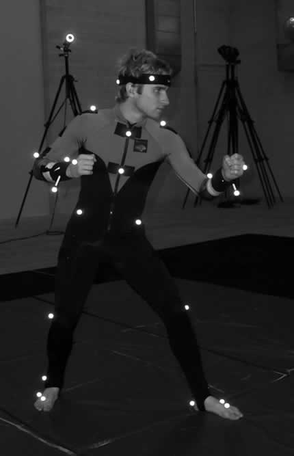
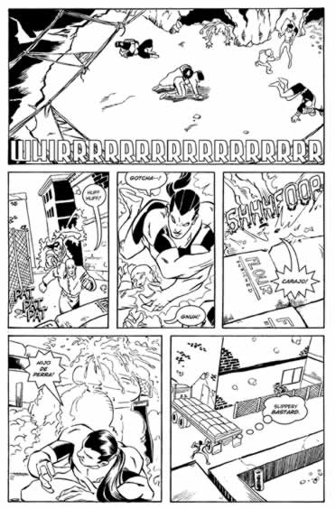

The only rule is that there are no rules, only the story.
— John Byrne
Chapter 10
Visual Design Rules
"I was just trying to make movies on paper."
Read More »
"The 180 degree rule is broken all the time. You have these quick cuts of flashy imagery to hypnotize you into paying attention…"
Read More »"I also make a point to young artists who show me page after page of characters hitting each other that they have to learn to draw the real world…"
Read More »The filmmaker, director, storyboard or comic book artist must express, using pictures, everything that the writer cannot communicate in words. In the real world, in the movies and in comics – "seeing is believing."
The pictures the artist presents to the reader must be convincing, compelling and dynamic, and again—as explained in the previous chapters; style is not a factor. Images that are "convincing, compelling and dynamic" could be as surrealistic as Bugs Bunny and Daffy Duck (talking animals?) or as realistic as Al Pacino in Scarface. The style or medium has little to do with good visual storytelling.
When staging a scene, it must convince the viewer/reader/player that visual representation has the appearance of reality. "Appearance" as defined as "perception," because there are many scenarios written and drawn in comics, that are now captivating us on the big screen, that are virtually impossible in the "real world." Yet, these occurrences should be logical, realistic and within the framework of the written story being visually told.
When rendering scenes of a story, remember the old cliché, "a picture is worth a thousand words." If there is a need to show a man in a costume and a cape flying in the air under his own power, and while rendering the miraculous feat doesn't appear to be possible (or if it's unclear), then the audience will be in trouble and they will be lost very quickly.
The best story-telling in comics, as well as in movies, is when the audience isn't really aware of the way the story is being told. They simply get caught up in the story and the characters themselves and want to see what happens to them next. If that's the reaction the viewer has, then the story-teller has done his job well.
The best story-telling in comics, as well as in movies, is when the audience isn't really aware of the way the story is being told. They simply get caught up in the story and the characters themselves and want to see what happens to them next. If that's the reaction the viewer has, then the story-teller has done his job well.
Rule #1: Clarity
The audience, whether it's a reader, viewer or player mustn't get confused or lost in the attempt at conveying the story.
Jeff Smith, author of the successful comic book series Bone, believes that it's the artist's job to make it easy for the reader to follow the visual story. "The clarity of the story is everything," he said. "Above anything else, the visual storytelling is the key to making the reader or the audience a participant."
If those illustrations present a poor storytelling effect, it will confuse and distract the reader from the story. Many times the audience is pulled out of the immersive world by the distraction of the wires used in special effects? There are not enough words to convince the reader that the scene is really happening, if it doesn't "happen" in the artwork and/or visuals. Visual storytelling can't fake it in pictures. The reader will reject the story, and immersive experience. One of the very first things John Byrne advises young artists is "back up your camera ten feet." The vast majority of work he sees is wrong, fresh out of the box. They go in too close on all the scenes, so it's difficult to convey adequate information to tell a story efficiently, if your camera is always three feet away from the action. "There has to be times when you pull the camera back and just look," Byrne said. "Of course, I use camera metaphorically here." It is true that there is no "camera" in comics, but the concept exceeds all visual storytelling media. A visual storyteller can't express a story adequately, in any medium, if three feet away from the action.
"I always say the establishing shot doesn't have to be the first shot, but it does have to be in there somewhere, so we know where we are and who is in the scene and what's happening and why. Clarity, clarity, clarity… and pulling the camera back."
Most people know how to read a comic strip – straightforward and simple to grasp, but the artist strives to make those static images more dramatic, making up for the lack of motion. However, attempting to create a more "dramatic" vertical panel layout here, only made this page more of a struggle to follow. This was due to the neglected focus on page design.
© 1994 Anthony C. Caputo
The single most important element in comics, film or interactive game production is good, clear visual storytelling. It is the task of the artist as storyteller, to communicate and convey information using sequential pictures. Clarity is the objective, from the very beginning, when figuring out composition, layout, and design. All composition and design of any scene in any visual media should be in the service of the visual storytelling - not at the expense of it. Specifically to comics, design should emphasize clarity of eye path, clarity of the action portrayed, and make clear what is being emphasized in the story. A good well designed comic story will show the readers all the information it is possible to show visually. This way the copy can be kept to a minimum and can concentrate on subtler dialogue instead of blocks of descriptive copy to explain what the art fails to show.
By mistakenly skipping the transmission of important elements to the reader/audience, there's the risk of confusion. That's the difference between why someone enjoys watching a film, playing a game or reading a comic book more than once. The visual storytelling is clear and enjoyable.
The good example of poor clarity is presented in Chapter 5, whereas the Phantom 2040 game neglects to inform the player of a very important component of the story in order to achieve the best ending. This error may not have ruined the experience completely, as getting through it is part of the fun, but without that information; the player could never completely win.
This basic foundation of rules can be called "classical structure." The classical structure was established in other mediums (theatre and creative writing) and has since carried over into the comics, films and interactive games. The definition of the classical structure differs, depending on which story guru speaking, but they all work because they mirror reality. It includes a story centered on a single active protagonist, with an external conflict in an ever changing real world that has emotional and intellectual closure at the end of the story. Although, there are other styles 1) "minimalism," which may include multiple protagonists in an insignificant world without closure, such as the films The Big Chill or Diner, or 2) "anti-structure," resembles something like Monty Python and the Holy Grail. Today, most visual storytelling work is, or aims to be, "classical" in structure.
As with any form of art, a thorough understanding of classical structure is usually needed to pull off more abstract styles, such as Pablo Picasso. In other words, clear knowledge of the basics is necessary, from which to build upon before revising, editing, or even ignoring them.
The traditional three-act structure that surfaced from theatre limits the revelations and plot points embedded within a story to keep interest. Most Hollywood films in recent years, average from six to ten major plot points per story, so only two or three plot points will simply not keep the player's attention in a film, let alone in a RPG interactive game, with 120 hours of game play.
There are three key factors to consider when presenting visual imagery to convey a written story, 1) Information – the attempt to communicate a message to the audience – what's the most articulate method of delivering that information, and 2) Emotion – in comics or interactive games, it all dependent on the artist, who needs to illustrate an emotion, and sometimes without the luxury of a close-up on a human face. The lighting, color, composition, angle, etc., all contribute to the mood of the scene, entire film or specific character, and 3) the Audience's emotion — what they should be feeling as they look upon the work.
Action Flow Direction
The "flow" between panels or scenes or shots must be consistent. The "flow" is the movement of characters from frame to frame and it must be believable and unswerving. Provide a solid path for all the characters, and avoid any unseen moves between panels or off camera that may distract from that flow. Also, as explained later in this Chapter, the 180 degree rule assures clarity by keeping characters on the same side of the frame from which they started.
If possible to do without opposing any of the aspects of good storytelling (including maintaining action flow continuity), design panels so the eye easily moves to the next panel in the sequence. This helps with the action and flow of the story, as well as with suspension of the reader's disbelief. If they have to stop and figure out where to go next, then they're lost and the story becomes just a bunch of pictures on a page or dynamic imagery on a screen..
In order of importance are typical design concerns, beyond the paramount concern of clear storytelling.
1) There should be clear eye flow. The audience, whether it is a movie viewer, game player or comic book reader should always be able to tell what is going on in a scene, and know what it is that he/she should be looking at. If there's a character punching or shooting, it should be clear who is punching and who is getting hit.
2) The clear eye path flow, in comic books or in storyboards, from one panel to the next panel in the sequence. Keep in mind that a reader will subconsciously follow the eye path into the next panel on the page. Make sure the design does not confuse the reader and send them looking into the wrong panel in a sequence.
Jack Kirby, a master and innovator of American comics proves it once again here, with a clear use of vertical panels. Not only is the design of the page and panels exceptional clear, but the tall, thin panels also provide a sense of great height.
Copyright: Machine Man is TM & © 2001 Marvel Comics. All rights reserved. Used with Permission.
3) Clear eye path from panel to panel in an extended sequence should flow fairly well over the whole page. Even with fancy layout and design, a reader should always know what order to read the panels of a page in. And it can lead a reader's eye off to the next page, which can help the flow of the story as well.
Determining how to establish a successful composition comes from A) Observation from other visual media and real life; seeing things in a compositional and design oriented way. B) Experience – the things learned by actually having done them. C) Theory from the books and schooling, and 4) Intuition - gut feelings are very important. This is the unique flare can spring static images to life!
Designing movement is important, more so in comic books and the printed page, than the dynamic media. The artist can show where the object is moving to and from, by adding certain shapes, lighting and panel design. If showing an object moving beyond the panel border, make sure it's to the next panel in the sequence. By using figure/object movement and panel action, this will help lead a reader's eye path into the story, panel-to-panel.
In the Mat Nasto film Bite Me, Fanboy! (BMF), these same elements were followed successfully, for the most part, as there were a few, painful exceptions where either space/physical limitations or lack of time became an obstacle. Ray, the main antagonist of the film, always enters from the right, which is the classic villain entrance. His entrances are always flowing against the established movement or action of the scene he's in, and prove a great counterpoint to it.
Even in the final sequence, the confrontation between Nick/Ray/Rachel, he follows the same pattern. Ray and Rachel, the film's antagonists, enter from the right, against Nick's (our hero) left entrance and movement. Ray stays physically between the former couple, in a visual representation of the rift that has come between Nick and Rachel throughout the movie. At the end of the sequence, Ray moves off-screen to the left, completing his right to left motion, ending the opposing flow of the movie, while Rachel changes direction and heads to the right and into the next scene of the move (moving the story towards its finale).
In the film Bite Me, Fan Boy!, writer-director Mat Nastos chose to have Ray, the main antagonist of the film, always entering from the right, which is the classic villain entrance.
© 2001 Epoch Entertainment. All rights reserved. Used with permission.
Rachel is also a force in the visual momentum of the movie. Her first two sequences involve fairly intense right-to-left movement that halts the forward/upbeat/positive flow of the movie. This is particularly felt in her second entrance/exit from Nick's place, in that there is a strong left to right movement for Nick in the shot prior, and her exit in the car and confrontation sequence are all very strong right to left. The movement/flow changed to be against a viewer's eye path/natural tendency to help slow down and intensify the emotion of the scene. In Rachel's first two sequences, she moves exclusively right to left, establishing her immediately as an antagonist for the movie.
Rachel's entrance at Nick's place switches from her right-to-left motion to left to right to enhance the action by moving it to fit the viewer's eye path. Nick's left to right facing in the "Stop Talking About Comics" sequence, helps to move the audience into the story.
During the middle of the Ray confrontation scene at the beginning, Ray is in the center of the screen (between Nick and Jared) to balance out the shot, and to give Ray the ability to bounce back and forth between the two good guys. Notice that Ray's close-ups are always left facing to reinforce and reconfirm his antagonist role.
In the geek out sequence, Jared is on the far right of the screen since he has the most dominant role. During his monologue, we switched him to left facing to enhance the action of his speech, and to allow the other characters to face right to left towards him to enhance his action.
Establishing the Scene
One of the first steps in either statically or dynamically illustrating a story is by establishing the scene, its characters, objects and mood, or setting the stage. As an artist or filmmaker there should always be an "establishing scene," which in one brief glance, gives the reader enough information to know who, and where they are about to travel. This is where placement of characters in relation to each other, within the designated environment sets a stage for the story.
In every visual storytelling medium, there must always be an establishing shot—on that pulls back and let's the audience know what, where and who are in the scene. Figure 9.8 is a two page spread from Terry Moore's Strangers in Paradise, where he used a mortice, used in filming television.
Copyright: Bite Me Fan Boy! Is TM & © 2001 Epoch Entertainment. All rights reserved. Skeleton Krew is TM & © 2001 BOXTOPTV.COM. All rights reserved. Used with permission. Strangers in Paradise is TM & © 2001 Abstract Studios. All rights reserved. Used with permission.
The 180 Degree Rule
The 180-degree rule is becoming a lost concept in both comics and film. Once the character's direction is established within the environment and in relation to the panel frame, maintain it in the following panels until the character changes his course within his or her environment. Arbitrary exceptions confuse the readers, even if only subconsciously and again, makes for a different or confusing entertainment experience. This concept taken to the extreme would be when moving the story forward, the protagonist always moves left to right, which follows natural eye direction. This offers and natural reading experience and the story flows comfortably. On the other hand, moving the protagonist in the opposite direction when being beaten back, with the antagonists also moving against eye direction can create a feeling of chaos unleashed! Remember, this is a bit extreme, but provides an example of the power of thoughtful visual storytelling.
To avoid confusing the audience, filmmakers would stay within a 180 degree arc to keep characters on the same side. Although this rule is continuously broken for dramatic effects, it's still an important element in good visual storytelling.
In the comic shop sequence in the film Bite Me, Fanboy!, prior to the protagonist's [Nick] date with Wendy, where the four friends discuss Nick's love problems. This scene shows an example of what NOT to do, because of the physical limitations of the comic store, the 180-degree rule was broken in order to obtain the coverage footage that we needed to complete the scene. Normally, the footage would've been flipped to make it work correctly (as in the third date sequence with Trina later in the film), but the large amount of printed material around the actors made this undoable, but a little more pre-planning would have solved this glaring error. In the Trina date we had a similar problem, but were able to flip the footage in order to get the actors on the appropriate side of the screen.
Most role playing games, for any platform, will have the characters stay in confined areas while in motion, conversing or fighting. This is to keep the characters clearly visible.
Copyright: Septerra Core is TM & © 2000 Valkyrie Studios. All rights reserved. Used with permission.
A frequent mistake beginners make is to cross the imaginary 180-degree line. If the line is crossed, the camera point of view is altered drastically and the result disorients the reader.
Copyright: Strangers in Paradise is TM & © 2001 Abstract Studios. All rights reserved. Used with permission. BONE is TM & © 2001 Cartoon Books and Jeff Smith. All rights reserved. Used with permission.
The camera angle should change every time the camera is moved. It is necessary to know when to change angles, and how. There are many examples in various media these days where the characters seem to be jumping around from place to place, with backgrounds suddenly appearing and disappearing for no apparent reason. In comic books, this happens because the artist had no idea where his camera was place in any of the shots.
The camera is not always stationary. In a scene where the angle is reversed by moving the camera, the 180-degree rule should still be followed. A character should remain on the same side of the scene even if the angle and point of view is reversed, in order to make it easy for the audience to follow the focus of the story, without having to work at following the characters.
Unless there is a very specific reason or effect in mind, never allow characters to jump across the 180-degree line, and switch sides of the panel.
A character should remain on the same side of the scene even if the angle and point of view is reversed, in order to make it easy for the audience to follow the focus of the story, without having to work at following the characters.
Set up and Pay off
Always set up items early in a scene, if they may be used or focused on prominently later in the story. For example, if a woman in the story is going to use a flashlight from her bedside table as a weapon against a prowler, at some point in the story, make sure that the flashlight is seen on the table when the stage is first set. It can be as subtle or as blatant as desired, but it should be there.
Here's an example of setting up the scene for later. In the background a public telephone is visible, which is used later to call the police.
Copyright: © 2001 Anthony C. Caputo. All rights reserved.
Action/Reaction
It's best to present as much information within each shot, expressing the action and then reaction, unless needed for a specific pacing effect. This is preferred instead of lots of small shots, each with only a small bit of information, making for less exciting scenes and less clarity of the world around them. Of course, in film, or in interactive game cut scenes (see Chapter 9), there's the advantage of dynamic motion, which can make up for quick cuts of bits of information and so an "action" scene and a "reaction" scene are usually separate frames, while in comics
Within the confines of the comic panel, it's best to include both the action, and the reaction, giving the reader the most information to keep the story flowing.
Copyright: Spiderman is TM & © 2001 Marvel Entertainment. All rights reserved. Used with permission.
Remember the basics when working with design; people shouldn't be jumping around the room from shot to shot or panel to panel, and they shouldn't even change the sides of the stage without reason. If focused on drawing comics, remember that whoever looks at the page has no idea what's supposed to be drawn; only what they see. If unsure or unclear about whether or not the storytelling is clear, hand the page to a friend or family member and ask them what they think is going on, generally. No need for specifics such as names, places and motivations; they should come up with a fairly accurate summary of the plot of the story unfolding on the page, whether it be for comics or as a storyboard; the foundation for other visual media.
Rule #2: Realiism
The American publishers of the RPG game SepterraCore were so delighted by Maya's (the main character's) popularity, the reviews and quality of the game, that they began discussing a sequel with creator Brian BMAN Babendererde. BMAN said he laughed when he recalled the mortified look on the publisher's face. "You can't kill the main character!" they said.
BMAN disagreed. In Shakespeare, everyone dies at the end. In the films Gladiator and Braveheart, they die at the end. "It's epic," said BMAN. "It's drama. It's reality—people don't live forever like iconic characters. People die in real life." The creation of the "tragedy" in early theatre was (and still is) an attempt at portraying realism- a necessary ingredient in the art of creating an immersive world. "What about the spin off sales and sequels and dolls and stuff?" Here, the story was more important that the ancillary rights and profits. "I believe the fans really see that in the game; they love the story. Isn't that what it's all about?"
The Reality Rule is about creating a sense of realism, which goes as far back as early theatre, where the nature of "realism" became a movement. The more realistic the sets, costumes, people and even the dialogue, the more believable the story. It all contributes to creating a world as real as possible, even on a flat two-dimensional surface (screen or page). This realism provides the foundation necessary to create outlandish imagery and characters and it all seems real. In the film, The Exorcist, when a possessed twelve-year-old girl (played by Linda Blair) starts spinning her head around 360 degrees; it appeared very real, because of the set realism of the environment. The movie wouldn't have been half as scary if it were a surrealistic demonic fantasy set in the burning inferno of hell; it was in a young girl's bedroom, in the real world. It's a very important immersive point, to portray a sense of reality so that the reader, viewer or player falls into the story.
There have been recent films that are associated with the nature of reality itself — Dark City, The Truman Show and The Matrix. All of these films portray elements of a world we can understand, that we can associate with, in order to compel us to believe the outlandish concepts and imagery.
Furthermore, the reality rule has nothing to do with style or photographic imagery. When reading a Spiderman comic book, the reader believes that this guy in skin-tight leotards is spinning a spider's web and swinging from building to building. It doesn't need to be photographic, and as a matter of fact, with the photographic or three-dimensional image, there are the limitations of the laws of physics or three-dimensional modeling software. The comic book artist can expound on reality, in order to convey the desire effect.
From the beginnings of modern theatre, to the advent of comics and film, when a humanistic approach was achieved, the audience related to the story unfolding and this contributed to drawing the audience inside; creating a relationship between the characters and the audience. Stan Lee, the creator of Spiderman and Fantastic Four was quoted as saying that he took the superhero concept popularized by Superman and Batman at DC Comics, and made them more "real" or more "human." Peter Parker, Spiderman's alter-ego was a teenage nerd with hang-ups and nemesis bully.
The sense of immersion comes from Spiderman swinging through realistic New York City; that sense of creating and maintaining a reality, particularly as a set for outlandish characters or deeds, successfully creates a sense of real, without a photographic image.
Copyright: Spiderman is TM & © 2001 Marvel Comics. All rights reserved. Used with permission.
If Spiderman lived in a doomed city on the dark side of the moon, people wouldn't be as impressed with his feats, because it wouldn't have any real cohesiveness. The sense of immersion comes from Spiderman swinging through realistic New York City; that sense of creating and maintaining a reality, particularly as a set for outlandish characters or deeds, successfully creates a sense of real, without a photographic image.
Stan Lee states in his 1974 book Origin of Marvel Comics, "I would create a team of superheroes, if that's what the market required, but it would be a team such as comicdom had never known. For just this once, I would do the type of story I myself would enjoy reading if I were a comic book reader. And the characters would be the kind of characters I could personally relate to; they'd be flesh and blood, they'd have their faults and foibles, they'd be fallible and feisty, and – most important of all – inside their colorful, costumed booties they'd still have feet of clay."
Depth of Field
All genre's of every visual media maintain a two dimensional medium, attempting to convey the illusion of three dimensions, whether on a printed page or a screen. There are three set planes that can create this type of illusion, the foreground, middle ground, and background. The artist usually wants to differentiate the three planes from each other to create the feeling of depth. This can be easily achieved by using contrasts in lighting, texture, rendering density, color, and the density of black areas. Sometimes the artist will want to merge the planes for effect or mood. For example, an artist drawing the DC Comics' Batman will blend the black on Batman's costume into the black of his surroundings. This establishes him as a creature of the night, which can surreptitiously travel in the shadows, making him a frightening character.
CAPTION: There are three planes that can create the illusion of depth on the flat page or screen – foreground, middle and background. By varying light sources, size and detail, you can create a three dimensional feeling.
As an artist, whether in film, games or comic books, try to convey reality through the use of depth. If there's a dark object in the foreground, then make the background light and visa versa. The same holds true for a detailed foreground. This also works with a fore-, middle-, and background - if the middle ground is light/dark then the fore and backgrounds should always be the opposite.
Technological tools provide a means of using other methods of showing depth, as depicted in the image below, where the blurred background give it an elusion of depth, even on a two dimensional surface.
Here is an example of using shaded, blurry characters in the background to show depth in a panel.
Copyright: Artesia is TM and © 2000 Mark S. Smylie, All rights reserved. Used with permission.
In interactive gaming, they use what's referred to as "motion capture" to achieve more realism in 3-D modeling. Motion capture is the process of tracking and recording real life movement in 3D space. Motion capture is more cost effective than key frame animation, with over possible 300 motions produced in a week, which would be impossible for a key frame animator to accomplish. Motion Capture can shave months off of a schedule for the average computer game or animated film while providing much more realistic movement than any animator could do by hand. "Essentially, we're tracing real life," said Maggie Bohlen, Producer at Red Eye Studios, a motion capture facility in Hoffman Estates, IL. "You can get a much higher volume of motions and the quality is going to be there right away. You have also the advantage of motion capture picking up subtlety of motion, and then you're only limited by your actor."
Caption: The motion capture mannikin, with real life Chad wearing the sensors.

Motion capture is used extensively in interactive games and 3D animated features to establish a more realistic characters by duplicating humanistic movements.
Copyright: Images courtesy Red Eye Studios. Used with permission. www.redeye-studio.com.
Motion capture is used extensively in interactive games and 3D animated features to establish a more realistic characters by duplicating humanistic movements.
Copyright: Images courtesy Red Eye Studios. Used with permission. www.redeye-studio.com.
Rule #3: Dynamic
Webster's Dictionary defines "dynamic" as "full of force and energy; active; potent." A list of synonyms for dynamic include energetic, compelling, vigorous, electric, and high-powered.
These terms are the core of what draws audiences to visual media of any kind. With this in mind, remember that, ideally, dynamic imagery should always be in the service of storytelling and not at the expense of the storytelling.
The primary differences in expressing dynamics in each of the visual media are based entirely on the laws of nature. Where they diverge is in the "output" media — if it's a live action film, there are photographic laws that are a staple of final film and even with a film like The Matrix, there is just so much that could be altered, before the sense of reality (see Rule #2) is at risk. There is also a difference between "special effects" and being "dynamic." True, special effects can add energy and excitement to imagery, but without a clear reason for the further enhancement of the story, it's just eye candy. An artist at the drawing board will see something in the mind's eye and put it down on paper, at which point it determined if it's something that is feasible in a live action film or 3D modeled game or animation. Today's technology makes anything possible, but the final output may have lost that "feeling" of the artist's original vision, only because it's plugging it into the laws of the natural order. Exceptional artists can easily create and draw imagery that can include nuances that don't need to adhere to the real world, thus "cheat" to make it more dynamic. This is the saving grace of comics and sequential art; there is no limit by the laws of the natural three-dimensional world – only the imagination.
Many comic artists, including John Byrne, who recently delved into 3D modeling were surprised at the fact that while drawing comics, what they thought was drawing a 3D world, wasn't really a 3D world. "I'll get this idea that I know would be easy to draw, but when I sit down to model it in 3D, it can't be done," Byrne admitted. "It's the various angles, perspective, depth of field, or various parts just would not come together as I envisioned it."

This example of dynamic storytelling include the use of "extreme" foreshortening and angles.
Copyright: © 2001 Cadre Studios. All rights reserved. Used with permission.
This example of dynamic storytelling include the use of "extreme" foreshortening and angles.
Copyright: © 2001 Cadre Studios. All rights reserved. Used with permission.
This enlightened Byrne to the fact that comic artists very casually, almost unconsciously "cheat" when they draw, because while illustrating dynamic imagery, the artist can get away with making something fit or turn or bend. A solid 3D object doesn't behave exactly, at least not without a massive effort, the way artists picture it in the mind's eye; the way they want it to. When building a 3D model, that's it, it's an object. Say, if it's a character, just like an actor, it needs direction and as in film, the play with camera angles to twist and distort is done with moving the character around on the 3D stage. The camera can be pushed in and pull out, for a wide angle view so that things look distorted or go the other way in order to get effects that comics' accomplishes, just by drawing them without so much a second thought. "It's made me very aware every time I draw a comic," said Byrne. "Look at that, I just did something I couldn't do in a model, or there's something that would've taken forever; just a very simple shot." Of course, Byrne also believes there is a flip side, which is when creating a single 3D object, then need 57 identical objects rotating around the core. To duplicate that object 57 times would take no time at all. "It wouldn't have difficult to draw it, but it would have taken forever to figure out the prospective, angle, texture; getting everything worked out."
Comics are very unique in the publishing world, because they offer the attraction of the visual storytelling using dramatic sequential illustrations. Although these images may lack any coherent reality as we see in our every days lives, they succeed in luring the reader into a bigger than life story. Interactive games are also unique, as the element of "dynamic" also means the game play for the user; that wild card that is the player, similar to the "wild card" that is the reader for a comic, but more interactive—they are part of the storyforming – rather than interpersonal, where they are a private part of the story experience. All these elements need to be considered when considering dynamics.
Storyboards tend to be very similar, but less experimental as the final images need to adhere to the laws of natural world, at least for live action film. They do have their place in the process of filmmaking as Andy and Larry Wachowski, when pitching for the funding of the Matrix had to draw the entire movie (and Keanu Reeves had to agree to do the movie) before anybody agreed to fund it.
The traditional illustrated (drawn, rather than 3D modeled) animation can be more dynamic as, again; the artist can "cheat" the natural laws and physics to illustrate more dynamic movement and style in imagery (Akira versus Max Steel). Even so, if the photographic lens can't do the job to the director's satisfaction, the post special effects team can make the vision a reality (so to speak).
For example, the climax of the film Miss Congeniality has Sandra Bullock tossing a beauty queen crown through the air to a Statue of Liberty stage armament. Upon hitting this Statue, the crown explodes into a giant blast of smoke, fire, foam rubber and confetti. The crown itself, the exploding statue, smoke fire and the confetti were all rendered in Newtek's Lightwave 3D, Adobe After-Effects 4.1 and Photoshop 5.5. "In real life, because of the way they wanted to film the crown flying through the air, she [Sandra Bullock] couldn't really throw anything. There was too much risk; hitting the camera equipment or people, so we put the crown in digitally," said Kevin Van Hook of Van Hook Studios, a film production studio in Glendale, California.
In the commentary, on the Miss Congeniality DVD, Sandra Bullock describes a blemish on her forehead as being big enough to cast a shadow on her costars. "We digitally took that out," said Van Hook. "An amazing thing— digital zit removal."
Film does not need to conform to the laws of physics or reality, but only artistic imagination and skill; as the comic artist has been doing for over a century.
There is an attraction to the process as presented in the book, The Art of The Matrix, where (sometime comic book illustrators) Steve Skroce and Geof Darrow present wonderfully crafted storyboards, and even though they are sketches developed for a foundation of a film, they can stand on their own merits with any visual storytelling work.
The appearance of dynamic action in comics is important - especially since static images don't literally move. The exaggeration of style, motion and strength are some ways to add dynamics to the static page. Stan Lee and John Buscema provide some very good studies on keeping the figures loose and agile in their book Drawing Comics The Marvel Way (1971). Andrew Loomis provided a precursor to these elements in his book Figure Drawing for all it's Worth (1943 and currently out-of-print – see Chapter 6). Amplify figure action to show the extreme movement and practice foreshortening to add three-dimensional life to the images. There are further techniques and formulas you can use in the next chapter.
Revolutionary comic artist Neal Adams mastered foreshortening and infused multiple dimensions on the static comics' page. Look at that! No spandex and flying bunches.
Copyright: Story is © 1990 Harlan Ellison. Art is © 1990 Neal Adams. All rights reserved.
The comics do not have the advantage of moving pictures, yet the action does happen and the characters do "move" - not in actuality, but because the story happens inside the reader's head; part of the interpersonal experience (as discussed in Chapter 1)—their contribution to the storytelling makes them move.
Most comics published feature powerful characters that do outlandish physical battles that need to look as if there was real motion. It's the artists' job, whether to express their vision of a particular scene for a movie, within a storyboard, or for reproduction in a comic book; the actions of the characters must be as dynamic as possible (within the context of clear visual storytelling). Sometimes it's more important to express the emotions of the battle, through surrealistic imagery, rather than the reality.
Remember that, ideally, dynamic art should always be in the service of storytelling and not at the expense of the storytelling.
Rule #4: Continuity
In dynamic linear media, the continuity of Dorothy's hair in the film The Wizard of Oz may have slipped by the first dozen times, but eventually, maybe after two dozen times, the inconsistency of it's length will become a distraction. In comics, where the imagery is static or in interactive games, where there's more control of the timing and path of the story, it would've been far more obvious.
All the elements of the story; characters, objects, landscapes, structures, etc should be consistent throughout the life of the story. It doesn't matter if its comics, film or interactive games, by not paying attention to the character elements of the character and his or her world is an easy way of losing your reader/viewer/player. A poorly executed story, with weak visual storytelling and bad continuity makes for a bad storytelling experience. In film, the shots are edited into sequences that form an unbroken, coherent whole. As in film, this is also true in comic books and interactive games. The scenes must match up properly. When they don't, it's when inadvertently, the reader is misinformed and they get lost.
Lazy and inconsistent visual storytelling results in two people talking for a few pages or scenes in a room that appears to be morphing with 12 corners and five different doors, with various items that seem to shift constantly. An obvious exception to the need for solid continuity is if a character wakes up in a mysterious environment and the writer and artist wants the reader to explore and discover the environment with the character, which could be a metaphor for feelings or sounds or motion.
The story should be told visually as clearly as possible except where being unclear is a conscious part of the storytelling. An example of "unclear storytelling" could be about a delirious and confused man has jumbled hallucinations spinning before his eyes. There are no clear thoughts expressed, with no clear eye path to follow, so this creates a desired sense of confusion. It becomes (again) part of the storytelling experience.
Freddie Femur is a character within the pages of Terry Moore's award winning Stranger's in Paradise. Throughout the dozens of issues, Femur is a louse, and that continuity doesn't waiver for a minute, even here. Moore incorporates a flashback to childhood, drawn in a completely different style, however, you're able to follow the path he's laid out through the continuity of the rain.
Copyright: Strangers in Paradise is TM & © 2001 Abstract Studios. All rights reserved. Used with permission.
The audience should always be able to tell what's going on, without having to read or hear another word. In comics, where his/her eye is supposed to go next is determined by his or her natural eye path (as defined in Chapter 3 of this book), and not by arrows or written directions. Film has the dynamic element, which although can create emotion through speed and chaos, it follows the same principals; the audience needs to know what going on. Games on the other hand can cheat – they'll give hints to the correct path. Some may be a subtle as sparkles when crossing the right track, to something as obvious as all the doors being locked, but one.
If the audience gets confused, even for a fraction of a second, they get distracted and will get pulled out of the flow of the story. They may lose their sense of suspect, fear or anticipation that the writer had build within the script for dramatic purposes.
As with many arts and creative skill sets, when a storyteller does his/her job well, most readers won't notice how much work went into the job. They will simply enjoy the entertainment value and long for more!
One simple test of effective visual storytelling, which comes from legendary comic book artist Dick Giordano, is to simply move your eyes from one panel to another, and add the imaginary caption: "Meanwhile, ten miles away."
If this caption actually fits as an appropriate description to a scene, but the scene is not meant to be ten miles away, then the audience becomes lost or confused.
There needs to be a continued flow of continuity by giving the reader constant visual hints of the characters, their location and specific action. One way of establishing clear clarity is including visual hints in each panel, or a "point of reference."
This is an arrangement of random photographs. It works in presenting a sequential story because they're all firemen – a single point of reference — and the continuity of the train disaster established in the first shots.
A visual hint can be as simple as the lightened hallway elevator button in one panel and the inside elevator control panel in the next panels. These single elements added to the background of a usually boring scene will immediately inform the reader that, even though the characters may appear to be inside a cube, but are really inside an elevator. Other storytelling ingredients included here are background colors and/or clothing.
There could be five different artists, all using the same storytelling principles, drawing from the same plot, and present great variety in the shots, the pacing, lighting, rendering, yet all mastering continuity.
Continuity is exceptionally important in any serial visual media. The fact that Peter Parker, and his alter ego The Amazing Spiderman hasn't changed too much since the early 1960s indicates that continuity is as important as with soap operas, or dramas in general, games, etc. People recognize with characters, their environment and actions. Continuity doesn't mean rehashing the same plot or scenes, but the same world.
Rule #5: Intuitive
Orson Welles once said, "I passionately hate the idea of being 'with it.' I think an artist has to always be out of step with his time." The various formulas to move the story forward are enhanced by (as mentioned by Robert Rodriguez in Chapter 4), "those [filmmakers] ready to take a stand and go in the opposite direction." As with any auteur, he believes that the audience can tell the difference between a works that is "processed" to one that is coming from someone personally.
Today, in film, an artist can either sketch out in storyboards the details of a film's foundation, for each scene, or thanks to modern digital technology the filmed can become those storyboards on a non-linear editing system. In comics, an artist either works from an existing script, fiddling with thumbnails and layouts of the overall page design and sequences. Many artist/writers of their own comic books will have a plot laid out, and write the story as they lay it out; creating scene descriptions in sketches and adding words in word balloons. Once satisfied with the pages and story conceptually, they may move into tighter or larger layouts, providing enough detail to now observe the adherence to the rules herein.
As mentioned before, it all starts from within, intuitively and personally—a representation of an individual style and story. It may be a good idea, before getting too far into wanting to use every one of the rules discussed in this book, to remember that it generally works best to work a sequence out intuitively at a layout stage. Then, go back and intellectually examine it for any flaws that should be corrected. By approaching visual storytelling with a totally analytical approach, right from the start, it may make the work stiff and sterile – stay on the right side of the brain! Remember to add art; a personal style and self-expression to the work. As Executive Producer Catherine Court and Robert Rodriguez mentioned in Chapter 5, the audience will see the passion.
The best thing for any artist to do is to sit down with a written script and draw thumbnails of the entire story from his or her own artistic instinct. Then, go back and look it over and start playing with things like timing, layout and design effects. This will help avoid the work from becoming as dry and stiff as it may have been written (if the writer has very little visualization capabilities). Sometimes the standard formula (i.e. panel one must be an establishing shot, then a close-up, then a long-shot, etc.) doesn't work or make for the most convincing, compelling and dynamic visual storytelling. Again, these rules are a guide to help, but not a way to churn out cookie-cutter scenes. As mentioned earlier, working off of a writer's script, and/or trying to collaborate with him or her for a better final product is always in the best interest of the project. Sometimes asking a few questions regarding vague descriptions can clarify a plot point in the story, and thus, providing more ammunition to be more effective in capturing the overall vision.
When drawing visual storytelling, show every nuance in the written script visually and clearly. The artwork should avoid descriptive copy or dialogue to cover up for missing visual elements. These narratives can take unnecessary time and cover up much of the artwork in an attempt to keep the readers attention and to deter confusion. If working with a good visual storyteller, the scripter can concentrate on subtext and continuity. The more that is said about a scene or presented within the scene, the more the scripter is free to further the story using prose, and avoid adding massive written dialogue on a scene.
Said Terry Moore about his comic series, "I wanted to read a comic like a novel, where I can be immersed in the lives of everyday people that I can grow to like and love and care about and just follow them along."
Copyright: Strangers in Paradise is TM & © 2001 Abstract Studios & Terry Moore. All rights reserved and used with permission.
After a three issue mini-series, published by Antarctic Press in 1993, Terry Moore launched his own imprint, Abstract Studio, and began self-publishing a regular Strangers In Paradise series beginning September of 1994 and is now published in seven languages worldwide. In 1996, Strangers In Paradise won the Eisner Award for Best Continuing Series based on the strength of the first eight issues.
"When comics are at their best, it's a powerful medium that offers both visual and text media and it offers elements that neither can offer," said Moore. "For instance, if I draw something beautiful on a page; a beautiful moment, the reader can linger there and stare at that moment and stay in that moment for as long as they wish." Moore explains that if that same moment was written as prose, in a paperback, it would only work, as long as the eye moves across the words.
The words on a printed page are like cars on a train. In a book, it only affects the reader as long as it continues to move. So, if the reader loves the blue car, it only works as long as it keeps moving past, so the moment comes and goes; comes and goes. To relive the blue car moment, moving the train again is critical. Just standing there and staring at that one word that moves you on the page, will not work for furthering the story. In the paperback novel, in order to relive the moment, those specific words on the page must be read over and over. If at that point, the Captain America moves you, you can stop and stare at these characters. The page could be placed on the table, go away, go eat dinner, come back, look at the page and the moment is still there. It's something that is unavailable in out books or film.
There is the depth of the text, coupled with the lingering visual effects. In a comic book, if an artist draws something disturbing, it's upsetting when every time the reader picks up the book. It's upsetting every time we open the page and look at it, because we have to confront it like a bad photograph. So it's the biggest single element in comic books that makes it different from any other medium. It makes it more powerful than any of the other mediums. "Unfortunately, this incredibly wonderful medium is in the hands of businessmen and craftsmen and it doesn't fall in the hands of visionaries and true artists. Probably the closest thing we've had to big hammer effects with the medium have been things like MAUS and PEANUTS; things that have actually moved the human race."
What really influenced Moore was a lot of bad comics, which is why he wasn't paying attention to comics for years. When he rediscovered them in the early '90s, he was looking for something more of his interest at that time, because he was no longer interested in the same books that entertained him as a teenager. He was looking for something that would entertain him as a grown man and was happy to find a lot of books that had this particular charm or that appeal, but he never found one book that was giving him what he wanted from the artform, which was, to read a comic like a novel, where he can be immersed in the lives of everyday people and people he can grow to like and love and care about and just kind of follow them along.